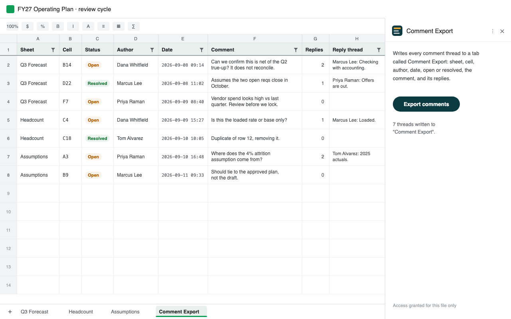

Google Sheets keeps comments somewhere you cannot sort them, count them, or get them out. If your review cycle happens in the comments, there is no way to answer "how many are still open" or "which ones are on the forecast tab" without opening them one at a time.
This is a Google Workspace add-on that puts them all in a tab. There is also a browser version that needs no install, which is what I built first.
Install it: Comment Export for Sheets™ is live on the Google Workspace Marketplace, so it installs in one click from inside Sheets: Extensions → Add-ons → Get add-ons, then search for comment export. The browser version still needs no install and no permissions at all, and the source is public either way.

What it writes
Press one button and it adds a sheet called Comment Export to your spreadsheet, one row per comment thread:
- Sheet and Cell, so you know where the comment lives
- Status, open or resolved
- Author and Date
- Comment, and the full reply thread beneath it
It arrives with a filter already applied and the header frozen, in the order the comments appear in the spreadsheet: tab by tab, then down the rows. From there it is ordinary spreadsheet data. Sort it, pivot it, download it as CSV, or paste it into a status update.
Rerunning it refreshes the tab in place. It never modifies, resolves or deletes your actual comments.
The use I did not see coming
Sorting is the obvious reason. The one that turned out to matter more is context.
A spreadsheet's cells carry its numbers. Its comments carry the argument about those numbers: why this assumption, what the pushback was, which figure is still contested and who contested it. That commentary is very often the only written record of how the model arrived at what it says, and it sits in a sidebar that nothing else can read.
Which means that when you hand a spreadsheet to a language model, you hand over the what and keep back the why. It sees 4.2% and not the three people who spent a week arguing about whether 4.2% was defensible.
The failure is quiet, which is the problem. Copy the cells and paste them into a chat
and the comments do not come with them. Upload the .xlsx and the comment
records are technically inside the file, but the usual ways of reading one return the
values and nothing else. Export to CSV or PDF and they are gone. In every case you get an
answer, confidently, from a spreadsheet that has been stripped of its reasoning, and
nothing tells you that happened.
Writing the threads into a tab fixes it at the source. The discussion becomes ordinary rows: copy them, download them as CSV, attach them, paste them in alongside the numbers they belong to. The decision history stops being trapped in the file.
The same property is what makes the unglamorous uses work. Once the threads are rows they are searchable, filterable and archivable, and a review cycle that happened in comments leaves something behind instead of evaporating when the quarter closes.
Who it is for
Anyone whose review process lives in the comments. Finance teams closing a budget, analysts working through data quality, operations teams running a planning cycle. The people who need to work down a list of open threads rather than read them one at a time.
Privacy
There is no server behind this. Access is granted one file at a time, so it never asks for permission to your Drive, and the only address it can contact is Google's own Drive API, which is enforced by the add-on's manifest rather than promised in prose. Your comments go from your spreadsheet, through Google's infrastructure, back into your spreadsheet. No analytics, no account, no retention.
The privacy policy and terms of service describe exactly what it does and what it does not.
Worth knowing
- It reads comments. Notes are a separate Sheets feature and do not appear.
- Google caps the export it relies on at 10MB, so a very large workbook may not run. You get a clear message rather than a silent failure.
- It is free. There is no paid tier.
How I built it
Google's comments API will tell you what a comment says but not where it lives: the anchor it returns is an opaque range id that resolves to nothing you can reach. The spreadsheet's own .xlsx export does carry the sheet and the cell, so the add-on asks Drive for that export and reads the comment records straight out of it. Everything runs inside Apps Script, under your account.
That is also why other tools do not carry it. Add-ons exist that export Sheets comments,
and the closest one reports the text or the content of the commented cell rather than its
reference. Content cannot locate anything, since 4.2% might sit in fifty
places. The cell reference is the field that makes an export usable, and it is the one the
documented API will not give you.
Built in an evening, which was only possible because the hard part, the parsing, already existed.
The browser version
Before the add-on there was CommentPulse, which does the same job as a web page: download your sheet as .xlsx, drop it in, and the threads come back in order. Nothing is uploaded, there is no sign-in, and it needs no permission from anyone.
It is still there and still the right answer in two cases. If your Workspace admin blocks add-ons, it is the only version you can run. And if you just want the list once, without granting access to anything, dropping a file is faster than installing software.
The source
Open source, MIT, at github.com/bsunter93/comment-export-for-sheets. Three files. The README documents the opaque comment anchor and the part-numbering trap in the xlsx export, because neither is written down anywhere I could find and both cost me an evening.